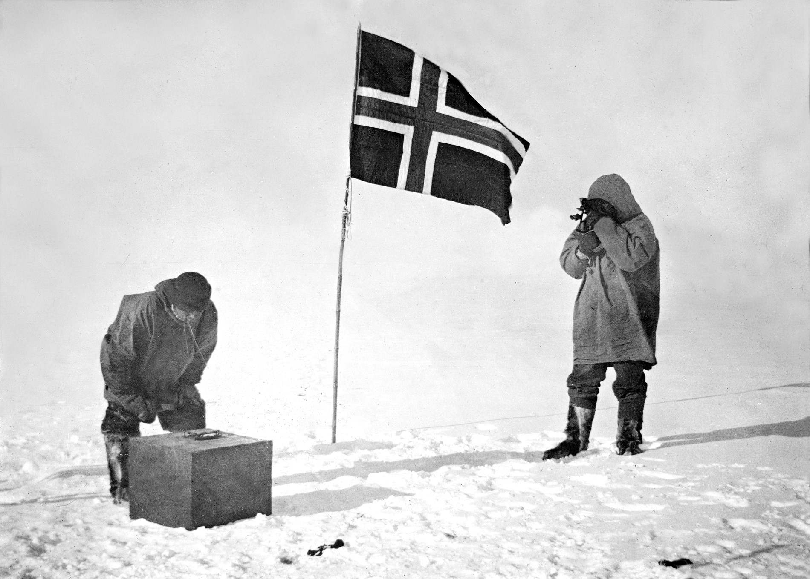

Chapter 1
A Bridge Too Far
The map spread across the table in the Royal Geographical Society’s council room showed a continent that had waited in silence for millions of years, and was now being claimed in strokes of ink. The date was 7 March 1912, and the secretary stood ready to record what the assembled fellows already knew: Roald Amundsen had reached the South Pole. The Norwegian flag had flown at latitude 90 degrees south on 14 December 1911, and with that single fact, the last great terrestrial prize had slipped from British hands. The fellows sat in the kind of silence that follows a death in the house. Outside the windows, London proceeded with its business—hansom cabs rattling over cobblestones, clerks hurrying to their desks—but inside this room, something had ended. The poles, both north and south, were now claimed. The map had no more blank spaces worth the naming.
The conquest of the poles had become, in the decades since 1874, the last great terrestrial prize for the British Empire and its rivals. What had begun as vague, romantic impulse had transformed into something more urgent, more institutional, more fraught with national significance. The Royal Geographical Society, founded in 1830 to advance geographical science, had become by the turn of the century something closer to a ministry of exploration.
Its fellows did not merely study maps; they sponsored expeditions, influenced government policy, and guarded the nation’s reputation as the preeminent exploring power on earth. When the society’s president rose to address the meeting that March afternoon, he spoke not of scientific disappointment but of national humiliation. The British public had been led to believe that Captain Robert Falcon Scott, then somewhere on the Antarctic ice, would plant the Union Jack at the pole first. Amundsen’s announcement had stolen that triumph before Scott could even claim it.
The irony was that Scott might already be dead. No one in that room knew the full truth: that Scott and his four companions had indeed reached the pole on 17 January 1912, thirty-four days after Amundsen, and had then begun the long march back across the Great Ice Barrier, their bodies failing, their supplies dwindling, their fate sealing itself in the temperatures that dropped below minus forty degrees. The news would not reach London until February 1913, when the search party found the tent containing the frozen bodies of Scott, Edward Wilson, and Henry Bowers. But on that March afternoon in 1912, the fellows of the Royal Geographical Society understood something that the British public did not yet grasp: the race was over, and Britain had lost.
The Antarctic had become an arena where personal glory, institutional prestige, and imperial ideology fatally intertwined. The continent offered nothing in the way of resources—no gold, no timber, no arable land—and yet it consumed fortunes and lives with an appetite that seemed to grow with each expedition.
The society’s archives held the records of decades of effort: James Clark Ross’s voyage of 1839–1843, which had discovered the great ice shelf and the volcanoes that would bear his name; the Belgian Antarctic Expedition of 1897–1899, which had been the first to winter in the ice; the British National Antarctic Expedition of 1901–1904, which had carried Scott to the edge of the continent and introduced a young Anglo-Irish officer named Ernest Shackleton to the polar world. Each expedition had built upon the last, each had claimed new records, and each had left the essential question unanswered: who would stand at the pole itself? Shackleton had served in the Antarctic on the Discovery Expedition of 1901–1904 and had led the Nimrod Expedition of 1907–1909.
Shackleton had arrived in Antarctica as a third officer aboard the Discovery, a twenty-seven-year-old merchant navy officer with no particular qualifications for polar work beyond his willingness to go. Scott had selected him, it seemed, more for his spirits than his skills. The expedition’s official history would record that Shackleton’s duties included managing the stores, editing the ship’s magazine, and participating in the southern journey that set a new Farthest South record of 82 degrees 17 minutes. But the expedition’s surgeon, Edward Wilson, noted in his diary that Shackleton’s constitution worried him. The young officer coughed persistently, complained of shortness of breath, and showed signs of what Wilson suspected was a lung condition that would worsen under the extreme conditions of the polar plateau. When the Discovery relief expedition arrived in February 1903, Scott made a decision that would shape the rest of Antarctic history: he sent Shackleton home.
The dismissal haunted Shackleton for the rest of his life. He had not been physically strong enough to continue, and the judgment—that he was somehow deficient, somehow unworthy of the final push—burned into him like a brand. When he returned to Antarctica in 1908 as commander of his own expedition, the British Antarctic Expedition aboard the Nimrod, he carried with him the need to prove that Scott had been wrong. The Nimrod Expedition of 1907–1909 would become the defining experience of Shackleton’s life. He and three companions—Frank Wild, Eric Marshall, and Jameson Boyd Adams—marched south across the Great Ice Barrier, climbed the Beardmore Glacier, and reached the polar plateau. On 9 January 1909, they attained latitude 88 degrees 23 minutes south, only 97 geographical miles from the South Pole. That advance toward the pole was, at the time, the largest in the history of exploration.
They turned back. They had no choice. Their supplies would not support a march to the pole and a return journey, and Shackleton made the decision that would define his reputation: he chose life over glory. The return march nearly killed them anyway. They survived by eating their ponies, by marching through blizzards, by pushing their bodies past the point that Wilson had diagnosed as possible for Shackleton’s constitution. When they finally reached the Nimrod, Shackleton was carried aboard, barely able to stand. He had proved himself. He had proved that he could lead men, that he could endure, that he could make the hard decisions that Scott—obsessed with reaching the pole—might not have made. But he had also returned without the prize.
The British public greeted Shackleton as a hero. He was knighted by King Edward VII, honored by the Royal Geographical Society, celebrated in the press. But the acclaim settled on him uneasily. He had not reached the pole. Someone else would. And until someone did, the Antarctic would remain unfinished business, a wound in the national psyche that would not close.
Shackleton understood, perhaps more clearly than anyone, that exploration had become a kind of warfare—that the poles were battlegrounds, that the flags planted there were more than symbols, that the men who reached them would claim a kind of immortality that no amount of subsequent achievement could match. He had been close enough to see the pole in his mind’s eye, close enough to know what it would feel like to stand there, and close enough to understand that he would never stand there now. Someone else would claim that victory. The best he could hope for was a different kind of first.
The conquest of the South Pole by Roald Amundsen in December 1911 forced Shackleton to rethink his polar ambitions entirely. The Norwegian had done what Shackleton had failed to do, and he had done it with a speed and efficiency that made the British efforts seem almost farcical. Amundsen had used dogs—dozens of them—and had slaughtered them systematically for food as he marched, traveling light and fast. Scott, by contrast, had insisted on motorized sledges and ponies, both of which failed in the extreme conditions, and had eventually pulled his own sledges across the ice in a style that Amundsen openly mocked. The contrast between the two expeditions was painful for British pride, and Shackleton felt it acutely. He had been part of the tradition that Amundsen had exposed as inadequate. If he was to return to Antarctica, it would have to be for something other than the pole.
Shackleton believed that there remained one great main objective of Antarctic journeyings—the crossing of the continent from sea to sea. The idea had been circulating in polar circles for years. The continent of Antarctica, unlike the Arctic, was a landmass—a vast, frozen plateau surrounded by ice shelves and mountain ranges. To cross it would be to traverse nearly two thousand miles of the most hostile terrain on earth. No one had ever attempted it.
The route that Shackleton envisioned began in the Weddell Sea, on the Atlantic side of the continent, and ended in the Ross Sea, on the Pacific side. A party would land on the Weddell Sea coast, march across the interior via the South Pole, and emerge on the Ross Sea side, where a supporting party would have laid supply depots for the final stretch. The undertaking was of staggering scale, far more ambitious than a simple dash to the pole and back. It would require two ships, two parties, and a coordination across a continent that no one had ever seen in its entirety. Shackleton estimated that the crossing would cover approximately 1, 800 miles (2, 900 km), a distance too great for his party to carry all its supplies.
The years between his Nimrod return and his next expedition had been restless ones. Despite the public acclaim that had greeted his achievements after the Nimrod Expedition in 1907–1909, Shackleton was unsettled, becoming—in the words of British skiing pioneer Sir Harry Brittain—‘a bit of a floating gent’. He had taken a job with wealthy Clydeside industrialist William Beardmore (later Lord Invernairn), with a roving commission that involved interviewing prospective clients and entertaining Beardmore’s business friends.
He was, by this time, making no secret of his Antarctic ambitions, but he was also a man without a clear purpose, a hero without a war. He lectured, he socialized, he planned expeditions that never materialized. The South Pole remained the obsession he could not shake, and when Amundsen reached it first, something in Shackleton snapped into focus. He would not compete for the pole. He would do something larger. He would cross the continent.
The Imperial Trans-Antarctic Expedition, as he named it, would be the last major expedition of the Heroic Age of Antarctic Exploration. The very term Heroic Age would later be applied by historians to the period from roughly 1897 to 1922, when explorers ventured into the polar regions with equipment that now seems almost suicidally inadequate—wool clothing, canvas tents, dogs and ponies for transport, and, above all, human bodies pushed to their absolute limits. The age would end with Shackleton’s expedition, though no one knew that in 1914.
What they knew was that the poles had been reached, and that the next logical undertaking was the crossing. After Roald Amundsen’s South Pole expedition in 1911, this crossing remained, in Shackleton’s words, the ‘one great main object of Antarctic journeyings’. Shackleton announced his plans in a letter to the Royal Geographical Society in December 1913, and by January 1914, he had secured the preliminary funding that would allow him to begin.

The expedition would require two ships. The primary vessel, which Shackleton purchased from a Norwegian shipbuilder and renamed Endurance, would carry the Weddell Sea party to the continent’s Atlantic coast. A secondary vessel, the Aurora, would carry the Ross Sea party to the opposite side of the continent, where they would land at McMurdo Sound and lay supply depots across the Great Ice Barrier toward the Beardmore Glacier. The depot-laying party would establish caches of food and fuel at intervals along the route, allowing the transcontinental party to complete their crossing without carrying all their supplies from the Weddell Sea side.
The plan had an elegant symmetry, dependent on precise timing and the assumption that both parties could land successfully on coastlines that were notoriously difficult to approach. The Weddell Sea, in particular, was known for its pack ice, which had thwarted previous expeditions, including Wilhelm Filchner’s German expedition of 1911–1912, which had discovered the coastline Shackleton intended to target. Shackleton described the depot-laying as vital to the success of the whole undertaking.
Shackleton estimated that the crossing would cover approximately 1, 800 miles, a distance too great to be attempted without support.
The mathematics of polar travel were unforgiving. A man on foot, pulling a sledge, could carry perhaps six weeks’ worth of food and fuel. Beyond that distance, he would need to cache supplies in advance or receive them from a supporting party. The transcontinental party would travel from the Weddell Sea coast to the pole—a distance of roughly 1, 500 miles—and then continue another 300 miles to the Ross Sea depots.
If the depots were not in place, they would die. If the Weddell Sea party could not land, they would never begin. If the Ross Sea party could not land, the crossing party would have no supplies waiting for them. The entire enterprise depended on a chain of contingencies, each link forged from variables that no one could control: weather, ice conditions, the reliability of ships and men.
The Royal Geographical Society, which had sponsored Scott’s expeditions, declined to sponsor Shackleton’s. The society’s leadership, still reeling from the news of Amundsen’s victory and awaiting word of Scott’s fate, was reluctant to support another Antarctic venture. The controversy would later surface in the society’s archives: letters exchanged between Shackleton and the society’s president, arguments about funding and responsibility, the kind of institutional politics that shaped expeditions as much as the geography itself.
Shackleton would have to raise the money himself. He approached wealthy patrons, gave lectures, sold the rights to his story in advance. He secured contributions from the British government—which gave £10, 000—from private donors like Scottish jute magnate Sir James Caird (£24, 000) and Midlands industrialist Frank Dudley Docker (£10, 000), and from the governments of Australia and New Zealand.
The expedition was a commercial enterprise as much as a scientific one, dependent on the sale of photographs, film rights, and newspaper coverage. The public would pay to read about the crossing, and that payment would fund the expedition itself.
The men who would crew the Endurance came from varied backgrounds. Some were merchant navy officers, like Shackleton himself. Others were scientists, recruited for their expertise in geology, biology, or meteorology. A few were adventurers, drawn by the romance of the polar regions. Frank Wild, who had been with Shackleton on the Nimrod expedition and had stood with him at latitude 88 degrees 23 minutes south, would serve as second-in-command. Frank Hurley, an Australian photographer, would document the expedition in still photographs and motion pictures. Thomas Orde-Lees, a Royal Marine officer, would serve as ski expert and storekeeper. Alexander Macklin, a recently qualified surgeon, would serve as the expedition’s doctor. The crew was not yet complete, and some positions would not be filled until the Endurance reached Buenos Aires, where Shackleton planned to take on additional hands.
The Ross Sea party, which would sail aboard the Aurora, had its own complement of men, including Captain Aeneas Mackintosh, who would command the depot-laying operation. Mackintosh had served with Shackleton on the Nimrod and had lost an eye in a shipboard accident during that expedition. He was, by all accounts, a capable officer, but he would be operating on the opposite side of the continent from Shackleton, with no way to communicate. The two parties would be entirely independent, linked only by the plan and by the depots that the Ross Sea party would lay. If anything went wrong on either side, the other side would not know. The coordination required was unprecedented in polar exploration.
The environment itself was the true adversary. The Antarctic continent, larger than Europe, held temperatures that could freeze human flesh in seconds, winds that could strip the skin from a man’s face, and ice that could crush a ship like an eggshell. The Weddell Sea, where the Endurance would attempt to land, was notorious for its pack ice, which moved in vast, shifting masses that could trap a vessel for months or years.
The icebergs that calved from the Antarctic ice shelves were among the largest moving objects on the planet, some of them the size of small countries. The continent’s interior, which Shackleton proposed to cross, was a plateau of ice nearly two miles thick, swept by katabatic winds that could exceed a hundred miles per hour. No one had ever seen most of the terrain that the transcontinental party would traverse. They would be mapping as they went, discovering as they suffered.
The psychological demands of the expedition were as formidable as the physical ones. The men who volunteered for polar service were, by definition, unusual—willing to endure hardships that most people could not imagine, for rewards that were largely intangible. They sought fame, certainly, and some sought scientific advancement, but beneath those motivations lay something harder to name: a desire to test themselves against the limits of human endurance, to see how far they could go before they broke. The Antarctic provided a laboratory for such testing, a place where the ordinary rules of civilization did not apply, where men could discover what they were made of. The discoveries were not always pleasant. Polar expeditions had a way of stripping away the social niceties, of exposing the raw nerves of human personality.
Shackleton understood this better than anyone. He had seen men break under pressure, and he had learned how to manage the fragile ecosystem of a polar party. The expedition as a social vessel required as much care as the physical vessel that would carry them south.
The discipline, hierarchy, and routines of shipboard life would become the primary life-support system in the event of disaster, and Shackleton knew that disaster was always possible. He had been trapped in the ice before, aboard the Discovery, and he had seen what months of darkness and confinement could do to men’s minds.
He had also seen what leadership could accomplish. When he had turned back from latitude 88 degrees 23 minutes south, he had done so against the desperate ambition of his companions, who had wanted to push on regardless of the risks. He had made the decision that saved their lives, and they had followed him. That decision had taught him something about the burdens of command.
The burden of command was not merely the responsibility for men’s lives; it was also the responsibility for the expedition’s success, and the two were not always compatible. A leader who prioritized safety above all else would never achieve anything worth achieving. A leader who prioritized achievement above all else would likely get his men killed. The balance between these imperatives was the essence of polar leadership, and it was a balance that each commander had to find for himself. Scott had erred, perhaps, on the side of achievement, pushing his party beyond what their bodies could sustain. Amundsen had erred on the side of preparation, planning so thoroughly that the achievement seemed almost inevitable. Shackleton, having turned back when he did, had found a balance that kept his men alive. But the crossing of the continent would test that balance more severely than anything he had attempted before.
The world into which the Endurance would sail was a world on the brink of catastrophe. The assassination of Archduke Franz Ferdinand in Sarajevo on 28 June 1914 set in motion the diplomatic crisis that would become the First World War. By the time the Endurance departed Plymouth on 8 August 1914, Britain was at war with Germany.
Shackleton offered his ship and men to the Admiralty for war service, but the First Lord—who happened to be Winston Churchill—declined the offer, instructing the expedition to proceed as planned. The war would be short, the Admiralty believed, and the scientific work of the expedition would continue regardless of events in Europe. The decision reflected a confidence in British power that the coming years would severely test, but it also reflected the importance that the establishment still attached to polar exploration. Even in wartime, even with the empire’s resources stretched to the breaking point, the Antarctic mattered.
The departure from Plymouth was marked by a mixture of excitement and foreboding. The crowds that gathered to see the ship off cheered as if for a naval vessel departing for battle, and in a sense they were not wrong. The men aboard the Endurance were going to war, though their enemy was not the German navy but the Antarctic ice. They would not return for years, if they returned at all. Some of them, as it happened, would not learn of the war’s existence until 1916, by which time the world they had left behind would be unrecognizable. They were sailing into a kind of time capsule, a frozen preserve where the old rules still applied, where the heroic age had not yet given way to the age of mechanized slaughter.
Shackleton stood on the deck of the Endurance as the ship cleared the harbor and set course for the open sea. He was forty years old, a man who had achieved much and failed at the thing that mattered most. He had been closer to the South Pole than any human being had ever been, and he had turned back. Now he was returning, not to claim the pole—that prize belonged to Amundsen, and perhaps to Scott, if the news from the south ever arrived—but to do something that no one had ever done. The crossing of the Antarctic continent would be, if it succeeded, the greatest feat of exploration in human history. If it failed, it would be remembered as a monument to overreach, a bridge too far across the ice.
The ice had become a symbolic bridge to immortality; one man was poised to attempt to cross it.